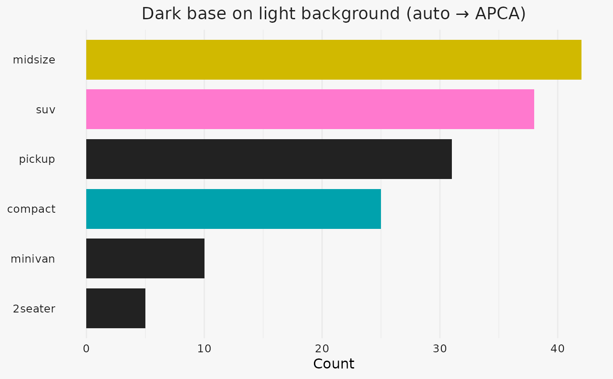

Generate a high-contrast, well-separated highlight palette (global search)
Source:R/highlight_colors.R
highlight_colors.RdChanges from your previous version:
Global hue sampling by default (
hue_targets = "auto")Optional hue repulsion near background/base (
repel_from,repel_band)Smart auto-bias toward opponent hues when bg & base are far apart (
auto_bias)NEW:
contrast_method="auto"picks APCA for dark-on-light and WCAG for light-on-dark
Usage
highlight_colors(
n,
background = "#F0F0F0",
base_color = "#4a1919",
contrast_bg = 4.5,
contrast_base = 3,
min_deltaE = 35,
hue_targets = "auto",
anchor_band = 180,
hcl_L_range = c(25, 75),
hcl_C_range = c(40, 90),
min_hue_sep = 35,
n_candidates = 1e+05,
relax = TRUE,
quiet = TRUE,
repel_from = c("background", "base"),
repel_band = 50,
auto_bias = TRUE,
bias_width = 120,
bias_frac = 0.8,
contrast_method = c("option", "auto")
)Arguments
- n
Integer, number of colors.
- background
Hex/R color for the plot background.
- base_color
Hex/R color used for non-highlight elements.
- contrast_bg
Required contrast vs background (WCAG ratio or APCA Lc depending on backend). Default 4.5.
- contrast_base
Required contrast vs base_color (set 0 to skip). Default 3.0.
- min_deltaE
Minimum CIEDE2000 separation between selected colors. Default 35.
- hue_targets
"auto", "anchored", "spread", or numeric vector of hue angles (0–360).
- anchor_band
Degrees around base hue to sample when hue_targets="anchored". Default 180.
- hcl_L_range
Allowed HCL lightness range. Default c(25, 75).
- hcl_C_range
Allowed HCL chroma range. Default c(40, 90).
- min_hue_sep
Minimum separation in degrees between chosen hues. Default 35.
- n_candidates
Number of random candidates before selection. Default 100000.
- relax
Progressively relax min_hue_sep then min_deltaE if infeasible. Default TRUE.
- quiet
Suppress relaxation messages. Default TRUE.
- repel_from
Character vector among c("background","base") to avoid those hue neighborhoods.
- repel_band
Degrees excluded around the repelled hues (±band). Default 50.
- auto_bias
Logical; if TRUE and bg/base are far apart, bias sampling toward opponent hues.
- bias_width
Width (degrees) of opponent sampling window when auto_bias applies. Default 120.
- bias_frac
Fraction of samples drawn from the biased window when auto_bias applies. Default 0.8.
- contrast_method
"option" (use global option, default) or "auto" (pick WCAG/APCA per polarity).
Details
Creates n colors by:
(1) sampling HCL colors (global or biased),
(2) filtering by WCAG/APCA contrast vs background (and optionally vs base_color),
(3) selecting a maximally-separated subset by ΔE2000 and minimum hue spacing.
Set contrast_base = 0 to ignore base contrast (keeps only background contrast).
Use hue_targets = "anchored" to sample around base_color (legacy-like).
NOTE: Switch contrast backend via: options(ggtwotone.contrast_method = "WCAG") # ratio scale, e.g. 4.5 options(ggtwotone.contrast_method = "APCA") # Lc scale, e.g. 60 OR pass contrast_method="auto" to pick per polarity.
Examples
highlight_colors(
n = 4,
background = "#222222",
base_color = "#eeeeee")
#> [1] "#0094C4" "#DF53B0" "#7B9300" "#009B81"
#> attr(,"info")
#> attr(,"info")$contrast_bg_eff
#> [1] 4.5
#>
#> attr(,"info")$contrast_base_eff
#> [1] 3
#>
#> attr(,"info")$min_deltaE_eff
#> [1] 25
#>
#> attr(,"info")$min_hue_sep_eff
#> [1] 10
#>
#> attr(,"info")$n_candidates_in_gamut
#> [1] 82588
#>
#> attr(,"info")$n_after_contrast
#> [1] 570
#>
#> attr(,"info")$n_selected
#> [1] 4
#>
#> attr(,"info")$hue_mode
#> [1] "global"
#>
#> attr(,"info")$repel_band
#> [1] 50
#>
#> attr(,"info")$auto_bias
#> [1] TRUE
#>
#> attr(,"info")$contrast_method
#> [1] "WCAG"
#>
# ---------------------------------------------------------------
# dark base on light background
# ---------------------------------------------------------------
if (requireNamespace("ggplot2", quietly = TRUE)) {
library(ggplot2)
bg_hex <- "#F7F7F7" # light background
base_hex <- "#222222" # dark base
set.seed(7)
pal <- highlight_colors(
n = 3,
background = bg_hex,
base_color = base_hex,
contrast_method= "auto", # automatically selects APCA
contrast_bg = 60,
contrast_base = 45,
quiet = TRUE
)
print(pal)
classes <- c("compact","suv","midsize","pickup","minivan","2seater")
counts <- c(25, 38, 42, 31, 10, 5)
highlight_classes <- c("compact","suv","midsize")
col_map <- setNames(rep(base_hex, length(classes)), classes)
col_map[highlight_classes] <- pal
df <- data.frame(class = classes, count = counts, fill = unname(col_map[classes]))
ggplot(df, aes(x = reorder(class, count), y = count, fill = fill)) +
geom_col(width = 0.8) +
scale_fill_identity() +
coord_flip() +
labs(title = "Dark base on light background (auto → APCA)",
x = NULL, y = "Count") +
theme_minimal(base_size = 12) +
theme(
panel.grid.major.y = element_blank(),
plot.background = element_rect(fill = bg_hex, color = NA),
panel.background = element_rect(fill = bg_hex, color = NA),
plot.title = element_text(color = base_hex, hjust = 0.5),
axis.text = element_text(color = base_hex)
)
}
#> [1] "#00A2AD" "#FF79CE" "#D1B900"
#> attr(,"info")
#> attr(,"info")$contrast_bg_eff
#> [1] 7
#>
#> attr(,"info")$contrast_base_eff
#> [1] 45
#>
#> attr(,"info")$min_deltaE_eff
#> [1] 35
#>
#> attr(,"info")$min_hue_sep_eff
#> [1] 35
#>
#> attr(,"info")$n_candidates_in_gamut
#> [1] 82507
#>
#> attr(,"info")$n_after_contrast
#> [1] 19609
#>
#> attr(,"info")$n_selected
#> [1] 3
#>
#> attr(,"info")$hue_mode
#> [1] "global"
#>
#> attr(,"info")$repel_band
#> [1] 50
#>
#> attr(,"info")$auto_bias
#> [1] TRUE
#>
#> attr(,"info")$contrast_method
#> [1] "APCA"
#>

# ---------------------------------------------------------------
# light base on dark background
# ---------------------------------------------------------------
if (requireNamespace("ggplot2", quietly = TRUE)) {
library(ggplot2)
bg_hex <- "#222222" # dark background
base_hex <- "#EEEEEE" # light base
set.seed(7)
pal <- highlight_colors(
n = 3,
background = bg_hex,
base_color = base_hex,
contrast_method= "auto", # automatically selects WCAG
contrast_bg = 4.5,
contrast_base = 3.0,
quiet = TRUE
)
print(pal)
classes <- c("compact","suv","midsize","pickup","minivan","2seater")
counts <- c(25, 38, 42, 31, 10, 5)
highlight_classes <- c("compact","suv","midsize")
col_map <- setNames(rep(base_hex, length(classes)), classes)
col_map[highlight_classes] <- pal
df <- data.frame(class = classes, count = counts, fill = unname(col_map[classes]))
ggplot(df, aes(x = reorder(class, count), y = count, fill = fill)) +
geom_col(width = 0.8) +
scale_fill_identity() +
coord_flip() +
labs(title = "Light base on dark background (auto → WCAG)",
x = NULL, y = "Count") +
theme_minimal(base_size = 12) +
theme(
panel.grid.major.y = element_blank(),
plot.background = element_rect(fill = bg_hex, color = NA),
panel.background = element_rect(fill = bg_hex, color = NA),
plot.title = element_text(color = base_hex, hjust = 0.5),
axis.text = element_text(color = base_hex)
)
}
#> [1] "#AF76AF" "#009F08" "#0096B3"
#> attr(,"info")
#> attr(,"info")$contrast_bg_eff
#> [1] 4.5
#>
#> attr(,"info")$contrast_base_eff
#> [1] 3
#>
#> attr(,"info")$min_deltaE_eff
#> [1] 35
#>
#> attr(,"info")$min_hue_sep_eff
#> [1] 35
#>
#> attr(,"info")$n_candidates_in_gamut
#> [1] 82507
#>
#> attr(,"info")$n_after_contrast
#> [1] 590
#>
#> attr(,"info")$n_selected
#> [1] 3
#>
#> attr(,"info")$hue_mode
#> [1] "global"
#>
#> attr(,"info")$repel_band
#> [1] 50
#>
#> attr(,"info")$auto_bias
#> [1] TRUE
#>
#> attr(,"info")$contrast_method
#> [1] "WCAG"
#>